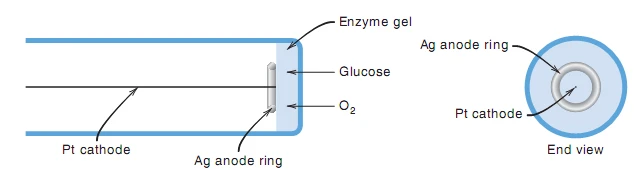
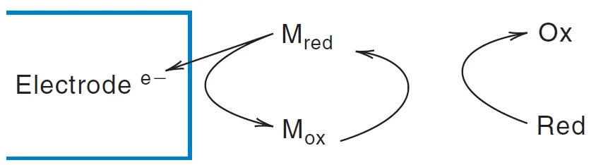
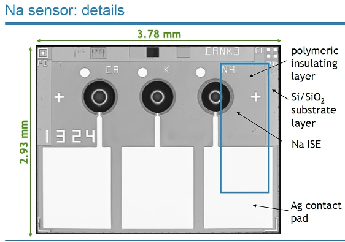

CHAPTER 14 · ELECTROCHEMICAL SENSORS & MICROELECTRODES
电化学传感器与微电极
按课件顺序整理原理、公式条件、复算例题与易混概念。
14.1 · SENSOR ARCHITECTURE
识别层、换能器与可测信号
化学传感器由识别分析物的化学过程与换能器（transducer）连接而成。电化学传感器可把膜电位、电极电流或电荷变成读数；光学或热学传感器则使用其他信号通道。理解器件时，先问识别什么、在哪里反应、如何传递电子或离子、最终测到哪个物理量。
化学修饰电极 CME 在导体表面固定酶、配体、氧化还原介体或选择性膜，使识别、催化与传质共同影响响应。修饰层可提高某一反应的速率或抑制干扰进入，但层太厚也会增大扩散阻力。导电性好、表面积大与分析选择性是不同性质，不能仅凭材料名称推断性能。
| 测量模式 | 控制或观察什么 | 本组课件对应例子 |
|---|---|---|
| 电位型 | 近零电流测膜电位 | pH 玻璃电极、Na⁺ ISE |
| 电流型 | 固定电位测电流 | 葡萄糖电极、氧电极 |
| 伏安型 | 扫描电位记录电流 | 溶出分析、循环伏安 |
| 库仑型 | 积分反应电荷 | 定量电解、库仑滴定 |
来源：14_Electrochemical Sensors 1.pptx，slide 2、13。
14.2 · ENZYME RECOGNITION
酶识别与葡萄糖氧化酶反应
课件把酶选择性分为绝对、基团、键型和立体化学四类。葡萄糖氧化酶 GOx 对 β-D-葡萄糖具有明显偏好，课件给 α 型相对速率 0.64、β 型为 100。溶液中的两种异头体可以通过变旋相互转化，因此测量时的平衡和反应时间会影响实际响应。
把酶辅因子展开，可以看出电子从哪里来：葡萄糖还原 GOx 中的 FAD，生成 FADH2 与葡萄糖酸内酯；O2 再氧化还原型辅因子，形成 H2O2；内酯随后水解为葡萄糖酸。合并后的净反应为：
GOx 提供对底物的化学选择性，电极通常并不直接“认出”葡萄糖，而是读取氧消耗或过氧化氢生成。把酶反应与电极半反应分别写出，能避免把生物识别步骤和电化学检测步骤混成一个反应。
来源：14_Electrochemical Sensors 1.pptx，slide 3–4。
14.3 · AMPEROMETRIC GLUCOSE ELECTRODE
过氧化氢怎样转化成电流
课件将 GOx 固定在凝胶层并覆盖 Pt 表面。葡萄糖和氧先从样品扩散进凝胶，酶反应生成的 H2O2 再到达电极，在约＋0.6 V 相对 Ag／AgCl 的条件下氧化：
每摩尔被收集并氧化的过氧化氢提供两摩尔电子，电流反映其到达电极的速率。固定膜厚、温度、溶液条件和电位后，可在校准线性范围内把稳态电流与葡萄糖浓度联系起来。电流的正负显示由仪器约定，但发生氧化的 Pt 工作电极在反应角色上是阳极；课件第 5–6 页将其称为 cathode，与所列氧化反应不一致。
氧供给不足会限制酶循环；葡萄糖浓度很高时，酶活性、膜传质或氧浓度也可能先达到限制，导致响应弯曲。较高检测电位还可能氧化其他物质。因此选择性除了来自酶，也需要膜、工作电位和样品基体共同支持。

来源：14_Electrochemical Sensors 1.pptx，slide 5–6。
14.4 · REDOX MEDIATORS
氧化还原介体：改变电子传递路径
若分析物在裸电极上的电子转移很慢，达到可测速率往往需要较大超电位。介体把直接反应拆成溶液或膜中的快速化学反应，以及电极上较容易发生的氧化还原循环。以一电子过程示意：
Mred → Mox＋e−（电极）
M 在循环中再生，净效果是 Red 失去电子并转为 Ox。选择介体时，其电位要同时适合电极再生和与分析物的反应，反应速率要足够快，固定后的稳定性与泄漏也要评估。介体改变的是动力学路径和适用的检测电位，不改变氧化还原所需的总电子计量。
课件以介体辅助检测 H2O2 为例，将检测电位从约＋0.6 V 降到约＋0.2 V，均相对 Ag／AgCl；这些数值用于说明其设计思路，具体体系还要由伏安图确定。更低的工作电位常可减少其他可氧化物的背景。二茂铁衍生物、钌配合物和其他可逆电对是课件列出的介体类别。

来源：14_Electrochemical Sensors 1.pptx，slide 7–8。
14.5 · ULTRAMICROELECTRODES
超微电极：径向扩散与稳态电流
超微电极 UME 的特征不只是几何尺寸小，还在于测量时间尺度上，电极半径 r 与扩散层尺度相比较小。扩散层大致随 √(Dt) 增长；当其超过电极尺度，边缘和径向输送更重要，静止溶液中也可出现近稳态的 S 形波。
课件列直径约 5–30 μm，并同时给出扩散层约 1–10 μm；两组数值不能自动保证任何时刻都满足上述条件，应检查半径和实际扩散时间。它的电流绝对值通常较小，但相对于面积的传质速率和电流密度可以较大，iR 降与电容充电的影响也更容易减小。
该式针对嵌入绝缘平面的理想圆盘电极，反应物表面浓度近零、径向扩散占主导；D 是扩散系数，cb 为主体浓度，n 是电子数。针状、圆柱或其他几何的表达式另行确定，不能直接套用圆盘系数。它可用于高电阻介质或局部微环境，但仍要注意仪器漏电、噪声和电极真实面积。
例：圆盘半径 5 μm，n=1、D=1.0×10−9 m²·s−1、cb=1.0 mol·m−3，稳态电流约 1.9 nA。浓度翻倍电流翻倍，半径翻倍也约翻倍，体现径向扩散下与半径成正比的尺度关系。
来源：14_Electrochemical Sensors 1.pptx，slide 9–10。
14.6 · MICROFABRICATED SENSORS
微加工传感器：把电极做进芯片
课件比较传统管状离子选择性电极与硅基平面器件。传统结构把内参比、电解液和敏感膜封装在电极体内；微加工器件把金属接触、电极、绝缘层和离子选择性膜布置到同一基片，实现多电极并列与小体积测量。尺寸变小后，膜的覆盖范围和暴露窗口也成为电极有效几何的一部分。
课件的 Na+ 芯片图包含接触焊盘、Si／SiO2 基底、聚合物绝缘层和 Na ISE。导线区域需要绝缘，只有设计的敏感窗口接触样品。芯片化便于集成，但参比稳定性、膜附着、封装渗漏、漂移和不同通道之间的串扰仍需逐项验证。
若一个芯片放置多个微电极，电极间距和测量时间决定各自扩散场是否重叠；因此阵列的总电流未必始终等于单电极电流乘以个数。应结合几何和时间尺度评估总响应。

来源：14_Electrochemical Sensors 1.pptx，slide 11–12。
14.7 · PERFORMANCE & REVIEW
从结构解释性能，再用校准验证
评价传感器要分别检查灵敏度、选择性、线性范围、检测限、响应时间、漂移和重复性。灵敏度是校准曲线斜率，检测限还取决于空白噪声；峰更高可能只是有效面积变大，而对干扰的识别能力需要额外实验。单次响应很快，也要观察清洗和下一次测量是否恢复原基线。
电流型传感器在线性区可写 i=i0＋kc，扣除背景后求浓度。若样品先稀释，应按稀释倍数还原。校准至少应覆盖待测浓度附近，并以加入已知量、平行样和干扰挑战检查实际基体影响。
应试时用一条连续链回答机制题：识别层选择分析物→酶或介体形成电活性物种→物种扩散到电极→在给定电位发生电子转移→电流经校准转换成浓度。说明每一步最可能受什么限制，比单独背“高灵敏、低干扰”更有解释力。
酶对葡萄糖选择性高，整个传感器就没有干扰了吗？
还要看其他物质能否穿过膜、在工作电位发生反应，或影响氧供给与酶活性。识别选择性和电极检测选择性需要分别检验。
超微电极的总电流更小，为什么仍有测量优势？
较小总电流减轻欧姆降，较高的相对传质速率和较小充电背景有利于某些测量；优势需和具体几何、时间尺度及仪器噪声一起评估。
来源：14_Electrochemical Sensors 1.pptx，slide 2–13；原理归纳与数值练习。